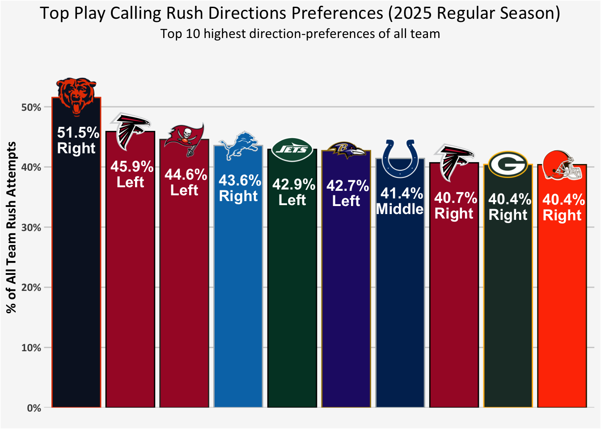
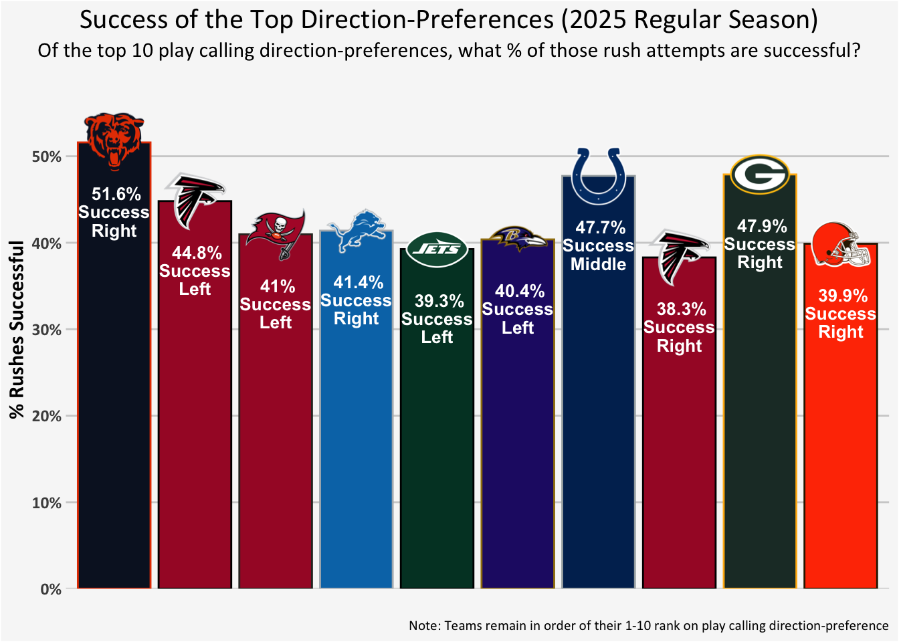
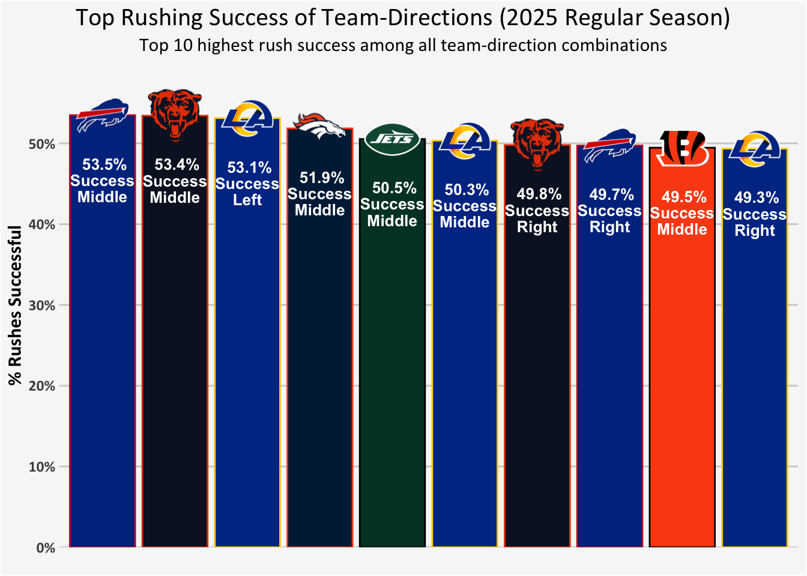

| Rest of NFL (non-Chicago) Rush Attempts by Direction | ||||
| Run direction |
2025 Reg Season
|
2026 Week 1
|
||
|---|---|---|---|---|
| n | % | n | % | |
| Left | 4608 | 36.7% | 271 | 37.1% |
| Middle | 3414 | 27.2% | 212 | 29.0% |
| Right | 4522 | 36.0% | 247 | 33.8% |
| Total | 12544 | 730 | ||
Football is back!🎉 And my Chicago Bears 🐻⬇️🏈 offense came out firing 💥🚀
Run direction
The Bear’s offensive line was (finally! mostly!) a strength last year — the unit overall was ranked as the third best in the league by PFF. Left tackle had early issue with performance and later issues with injury (continuing into the 2026 season), and our 2025 center unexpectedly retired at age 27. But the remaining 3 out of 5 O-linemen returning for 2026 are outstanding:
Left guard Joe Thuney was the inaugural 2025 NFL Protector of the Year, right guard Jonah Jackson is solid, and right tackle Darnell Wright is a monster. Given the left tackle issues, it makes the right side the strength and the Bears run right because of Wright.
(Side note: Darnell Wright is also freakishly athletic and needs to be on the receiving end of a trick-play kinda touchdown pass ASAP.)
Let’s first check out the extent to which the Bears play calling did prefer to go right in 2025, and see if those trends continued into the first week 1 of 2026.
Play Calling
The nflverse play-by-play data records the direction for rush attempts: left, middle, right.1
Because I am interested in play calling direction preferences, I am focusing on plays that seem to be intended as rushes (i.e., not quarterback scrambles), and plays in which we can interpret the direction (i.e., we may not have a coding of the intended direction for rush attempts when there was a fumble in the backfield before the hand off).
NoteNitty-gritty details of runs that are excluded
This is the less interesting story to tell, but a major part of the real work of getting familiar with new data: Figuring out the messy details, what do I want to conceptually include or exclude, and what is missing and why. The Data Dictionary is a starting point, but the exact details can be tricky — particularly for how plays get represented when they are not so straight forward (i.e., an intended pass breaks down and becomes a run; a fumble happens; there are penalties before the snap or during the play, and they may nullify the play or be added on to the end result).
I start by including play_type == “run” or when rush == 1 or when rush_attempt == 1, and then examining any inconsistencies and other things I find that don’t fit my conceptualization of run play calling. (Note that by the end of cleaning, these “or’s” became “and’s”; that is, all plays that remain were play_type == “run” & rush == 1 & rush_attempt == 1.)
I will exclude:
- quarterback scrambles (they were intended as passes, and the direction they go is often in reaction to a breakdown rather than a plan)
- quarterback kneel downs (this isn’t really a play, and doesn’t have a direction and gap coded anyways)
- fumbles when there is no run direction (that is, run_location is NA; spot checking these, a lot were fumbles by the quarterback so likely occurring before or during the hand off, most result in no gain or losses, and overall it seems we can’t interpret the called rush direction)
- two point attempts (they do not have direction information in this data anyways, but conceptually they are also a bit different in overall game-flow-play-calling given their one-shot nature)
I removed any play_type == “no_play” when the snap or intended play is nullified by a penalty.
I did not remove any other plays with penalties, as these may be on offense or defense and could be offsetting or declined or added on to the end of runs.
I do not yet fully understand the handling of penalties within the nflverse, and I will need to spend more time with understanding how this is represented in this data, what are the conventions/norms are for dealing with these types of plays. But I will note that of the run plays in the sample I have defined, overall offensive penalty rates of the remaining data were very low (< 1%).
I will note that (other than some fumbles) even when a run did not gain positive yards, the data has coded for the (presumably intended) direction and gap. And fumbles with yards gained also had run_location (seemingly, these would mostly be fumbles later down the field). So these plays were all included.
I’m primarily interested in my Chicago Bears, but I’m going to compare them to the NFL when excluding Chicago, aka the rest of the NFL.
The rest of the NFL was pretty balanced in their split between left and right in 2025, and picking either direction a bit more often than the middle. Week 1 of 2026 did show a bit of a preference for running to the left.
The Bears, on the other hand, are going right by a large margin in 2025 and continuing that trend in the small sample we’ve seen in week 1 of 2026.
| Chicago Bears Rush Attempts by Direction | ||||
| Run direction |
2025 Reg Season
|
2026 Week 1
|
||
|---|---|---|---|---|
| n | % | n | % | |
| Left | 135 | 30.6% | 9 | 28.1% |
| Middle | 73 | 16.6% | 7 | 21.9% |
| Right | 233 | 52.8% | 16 | 50.0% |
| Total | 441 | 32 | ||
Top Play Calling Rush Direction-Preferences
I had lumped together all the rest of the NFL, so it was all rush attempts by any team other than the Bears. But let’s consider each team’s breakdown of the percentage of time they run left, middle, or right and look at the top play calling rush direction-preferences:
Did any teams have as extreme of a direction preference for the run as the Chicago Bears in 2025?
Nope!
The Bears were the most extreme in their direction-preference. The Tampa Bay Buccaneers and the Atlanta Falcons liked rushing left (and to a lesser extent the Falcons also liked going right, foregoing rushes up the middle), but not nearly as much as the Bears ran right.

Play Execution
Play Execution Among Top Play Calling Rush Direction-Preferences
But that was just about comparing the play calling in terms of direction preferences. When the Bears do run right (or when any of the teams in the top 10 play calling direction-preferences go in their preferred direction), how successful are those rushes?
NoteNitty-gritty details of metrics of “success”
On the Bear’s broadcast I heard a mention of how often run plays went at least 5 yards. While that’s a nice round number and good for a broadcast, if a 1st down or even a touchdown is only 1 yard then a rush can be very successful without going 5 yards, and similarly a 5 yard rush is not particularly great on a 3rd & 8.
My understanding is that at some point analysts started trying to represent success as gaining a certain percentage of the needed yards for first down depending on the down (i.e., 40% of yards on 1st down, 60% on 2nd down, and 100% on 3rd and 4th downs). Better, but still some downsides (that I won’t try to dive into here). But the new and improved evolution of this kind of thinking in the nflverse play-by-play data is “success” as an binary indicator of whether the play leads to any increase in the EPA (expected points earned). So I’ll be using that metric.
(I wish I had a specific citation to link to and to clarify this metric-development-history; at this point it’s kind of more a newly learned impression of mine that could be slightly inaccurate. But I’ll just note that I got started with some good overviews from Introduction to NFL Analytics with R by Brad Congelio, so conceptual understanding credit likely goes there — and any mistakes or mis-remembering is my own.)
NoteNitty-gritty details of rush attempts for play calling vs play execution success
Note here that as we shift from play calling choices to representing play execution with “success”, some other conceptual choices of what to include in our rush attempts might be prudent.
For example, we might consider whether to exclude plays with offensive penalties or with defensive penalties. Because I want to wind down this first week’s getting-to-know the data exercise and I want to have a consistent sample across these different play calling vs play execution success investigations (that is, not deal with complexities of how the sample might differ across the questions), I won’t go down this road.
I will note that any further exclusions would remove a minority of total plays so it (hopefully) would not hugely change the overall conclusions here, but a deeper consideration of these aspects would be more ideal.
Maybe some time in the future?
The Bears were also the most successful among those top play calling rush direction-preferences.

How does that success rate going right stack up against the best success rates for teams running in particular directions?
Top Play Execution, Regardless of Play Calling Rush Direction-Preferences
That is, let’s drop the play calling preferences entirely and consider every team and each of the three possible directions:
Regardless of how frequently a team choose to go any particular direction, what team-direction combinations had the highest overall success rates?
The Bears going right was among the most successful team-direction combinations in the 2025 season, and they were even marginally more successful going straight up the middle (which we know from the prior tables they do quite a bit less often than the rest of the NFL average).

Wanting to wind down this first week’s getting-to-know the data exercise, I am going to stop myself from too much detail to follow up on this, or looking at success in such a small sample of 2026 (i.e., the Titans had a 100% success rate going left in 2026 week 1… based on two runs in that direction).
But a few conceptual aspects to point out about the 2025 data and ideas that might be picked up in the future:
Of these top 10 team-direction success rates, the Bears are using the middle the least relative to other groups (that is, they run up the middle only 16.6% of the time whereas the next lowest usage among these top 10 success rates is that Denver runs up the middle only 20.3% of the time).
Why would the Bears not run up the middle more often if they are successful?
It’s successful, but it’s average yards gained is quite low (as is Denver’s runs up the middle) — so it’s likely a result of being successfully but selectively used primarily in short yardage situations. This may be true of some of these other top 10s: The middle is heavily represented in this graph, but across the league running up the middle averages fewer yards than either left or right directions.
In fact, if we look at it the other way, we know from our prior graphs that the Bears going right is far more common than any other team-direction combo (at 52.8%), and among these top 10 success rates (among all team-direction combination) the next most common team-direction play call is that Buffalo goes right 39.1% of the time.
Overall, there is not much of an element of surprise or situational selectivity in the Bears running right as it’s the single most common team-direction preference — but it is also one of the most successful team-direction combinations.
In 2025 the Bears ran right often, and they did it very well. And they’ve started week 1 of 2026 off calling runs to the right. We’ll see how well it works again this year.
Bear Down! 🐻⬇️🏈
Data citation
Carl S, Baldwin B, Sharpe L, Ho T, Edwards J (2025). nflverse: Easily Install and Load the ‘nflverse’. R package version 1.0.3, https://nflverse.nflverse.com/.
Footnotes
The variable is “run_location” but I’m going to prefer the term “direction”. Also, I won’t get into the detail now, but for future reference the play-by-play data also has an additional note of gap for any left or right direction: guard, tackle, or end.↩︎